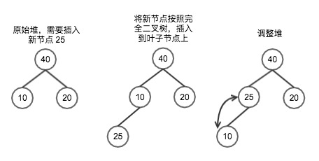
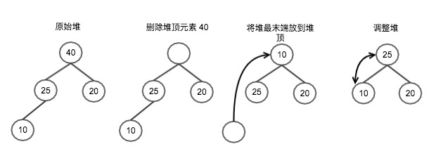

堆排序
最近在为找工作做准备，然后就在看排序算法，刚好在自学go，然后就用go把常见的几个排序算法实现了一下，收获还是不少的。
这里就先说一下堆排序。说到堆排序就得先说堆，然后才有排序。博主我刚开始也是一脸懵逼，什么是堆呀，堆内存、栈内存是什么我还知道，堆是什么？
堆
首先堆是一个完全二叉树，什么是完全二叉树，小伙伴们可以自己百度，这里送出传送门。堆排序中的堆还要满足下面一点
父结点的键值总是大于或等于（小于或等于）任何一个子节点的键值。
这里具体是大于等于或小于等于取决于堆是最大堆还是最小堆。如果是最大堆，那父节点就大于等于子节点；如果是最小堆，那父节点就小于等于子节点
这里，刚开始看到这，博主我又是一脸懵逼，只需要父节点大于等于子节点就可以排序啦？左右两个子节点没有什么特殊规则？也就是左子节点与右子节点大小关系对排序结果无影响。。。。
what？那我如何通过对生成的堆遍历来生成有序数组呢？
这里先说一下，这是博主认识错误。。没有了解到堆排序的本质，下面说明堆排序
堆排序
堆排序的本质其实是选择排序，所谓选择排序是从待排序数组中选择最大或最小的一个元素，然后存放到队列的起始位置或终止位置，这取决于具体实现
而堆排序相对于选择排序，通过堆这种数据结构，减少了查找过程，更是减少了移动过程中的交换次数，所以效率相对于正常选择排序快很好
这就解释了，为什么堆排序的堆，只需要保证父节点值大于或等于任何子节点就好（这里用最大堆举例）。堆排序大概思路（以最大堆为例，从小到大排序，使用数组模拟堆）：
1. 将待排序数组整理成堆
2. 根节点和数组最后节点交换（将最大值放到最后）
3. 将数组0到maxLen-1元素重新整理成堆
4. 重复步骤2，直到堆就剩下一个元素，排序完成
这里注意，为了方便整理堆，所以堆元素从数组0位置开始，也就是已排序元素放到最后。这样的话，如果是从小到大排序的话，就使用最大堆，然后堆的根节点放到数组最后就是最大值。反过来，如果是从大到小排序，就使用最小堆，堆的根节点放到数组最后就是最小值。
堆的操作
堆排序主要牵扯到堆元素的插入和堆元素的删除，这里对这两个操作说明一下后就可以写代码啦
插入
过程如下图

首先已有堆，需要在该堆中插入新节点25，
第一步：按照完全二叉树原则，将新节点添加到二叉树的叶子节点中
第二步：按照堆的规则，对堆进行调整。首先25的父节点没有25大，所以将父节点与25进行交换。然后继续比较25与他的父节点值。如果小于或等于，则堆调整完成。如果大于，则继续调整
删除
过程如下图

首先已有堆，删除堆顶元素
第一步：删除元素40，然后将堆末元素10值放到堆顶元素上，如上图中第三个图
第二步：重新调整堆，找到堆顶元素左右子节点中最大值与堆顶元素进行交换。
第三步：交换后，对交换后的子节点对应的子树继续进行步骤2操作，直到堆调整完
有了上面两个操作，就可以开始写堆操作的代码啦
代码实现
package main
import (
"awesomeProject/alg/lib"
"fmt"
"time"
)
// 函数入口
func main() {
// 排序元素数量
count := 1000000
// 获得排序元素，即产生count个随机数数组
arrRand := lib.GetRandom( count )
// 记录开始执行时间
startTime := time.Now().UnixNano()
// 调用排序函数，传递需要排序的数组
HeapSort( arrRand )
// 记录执行完毕时间
endTime := time.Now().UnixNano()
// 打印时间
fmt.Println( "执行时间：", (endTime - startTime) / 1000000 )
//lib.PrintArr( arrRand )
}
func HeapSort( arrRand []int ) {
// 获得数组大小
count := len( arrRand )
// 将无序数组按照堆规则生成最大堆
createHeap( arrRand, count )
// 从堆中获得排序数组
getArrWithHeap( arrRand )
}
/**
对arrRand进行整理，使其形成堆结构
end 参数为需要整理的数组元素最后一位位置
*/
func createHeap( arrRand []int, end int ) {
// 数组长度
count := end
// 使用数组模拟堆，第一个节点默认已有序，
// 所以从数组第二个元素，也就是index=1开始往堆中插入元素
for i:=1; i<count; i++ {
nIndex := i // 记录需要调整元素索引
nCom := (nIndex -1) / 2 // 需要调整索引元素父节点索引
// 循环，直到父节点>子节点或已调整到根节点 退出循环
for {
// 子节点>父节点，调整节点值
if arrRand[nIndex] > arrRand[nCom] {
tmp := arrRand[nIndex]
arrRand[nIndex] = arrRand[nCom]
arrRand[nCom] = tmp
// 将待调整节点指向父节点
nIndex = nCom
// 如果当前父节点已为根节点，也就是下一次调整节点也为根节点，跳出结束调整
if nCom == 0 {
break
}
} else { // 父节点>=子节点，调整结束
break
}
// 将父节点重新指向当前父节点的父节点
nCom = ( nCom -1 ) / 2
}
}
}
/**
调整堆，
arrRand为模拟堆的数组，
nIndex为需要调整的元素在数组中的下标
len为堆的元素个数
*/
func ajustHeap( arrRand []int, nIndex int, len int ) {
count := len
// 左孩子位置
nLeftIndex := nIndex * 2 + 1
// 右孩子位置
nRightIndex := nIndex * 2 + 2
// 最大值位置，默认待调整元素
nLargest := nIndex
if nLeftIndex < count {
if arrRand[ nLeftIndex ] > arrRand[ nLargest ] {
// 如果左孩子存在，并且左孩子比最大值大，则将最大值索引修改为左孩子对应索引
nLargest = nLeftIndex
}
}
if nRightIndex < count {
if arrRand[ nRightIndex ] > arrRand[ nLargest ] {
// 如果右孩子存在，并且右孩子比最大值大，则将最大值索引修改为右孩子对应索引
nLargest = nRightIndex
}
}
// 如果最大值索引已经不是默认待调整元素原来位置，则进行交换
if nLargest != nIndex {
// 交换值
tmp := arrRand[ nIndex ]
arrRand[ nIndex ] = arrRand[ nLargest ]
arrRand[ nLargest ] = tmp;
// 继续对调整后的子树进行调整
ajustHeap( arrRand, nLargest, len )
}
}
/**
从堆中获得排序队列
*/
func getArrWithHeap( arrRand []int ) {
// 获得队列长度
count := len( arrRand )
// 循环取堆对大元素，将元素与堆元素最后值进行交换，然后对剩下的堆进行重整
// 即删除堆顶元素，然后重新调整堆；只不过这里删除的元素放到数组后面，形成了有序的序列，并降低空间复杂度
for i:= 0; i<count-1; i++ {
// 记录最大值
tmp := arrRand[0]
// 获得堆最后元素位置
lastIndex := count-i-1
// 将堆最后元素值放到堆顶
arrRand[0] = arrRand[lastIndex]
// 将最大值放到堆最后元素位置，即数组后面
arrRand[lastIndex] = tmp
// 将剩下的堆，进行重新调整
ajustHeap( arrRand, 0, lastIndex )
//createHeap( arrRand, lastIndex )
}
}
过程动图，很给力（这里使用别人图片）
动画中在排序过程之前简单的表现了创建堆的过程以及堆的逻辑结构。

总结
堆排序空间复杂度为O(1)，只需要一个临时变量用于交换的时候，临时存储值。时间复杂度为nlogn。
说到时间复杂度，插一个小插曲，也是这里值得记录的地方。如果时间复杂度为nlogn的话，其速度应该与快排差不多，至少在同一量级。结果在刚开始实现完成后，发现100w数据量，快排大概100多毫秒。而我写的堆排序1w的数据差不多也得100多毫秒。
这个郁闷了，然后查找代码中性能损耗在哪里了。因为效率这么低，肯定是哪块排序的核心算法有问题，说大点就是算法的本质没有搞明白。最后终于找到问题的本质了
问题出在获得有序数组的过程中，删除堆顶元素后，刚开始偷懒，调用的是重新创建堆，也就是从头到尾一个一个元素重新往堆中插入形成新堆。而真正的删除过程，只需要调整树中的某个分支即可，而无需每次调整都重新创建分枝。通过代码中方法getArrWithHeap( arrRand []int )倒数第二行可以看到，原本调用的是创建堆的方法，后面添加的调整堆的方法，然后重新测试，100w数据量，堆排序大概200毫秒，效率提升两个数量级。
到这里，堆排序算是整理完毕。也算是对自己的收获进行了整理。也希望这里能帮助到其他小伙伴。